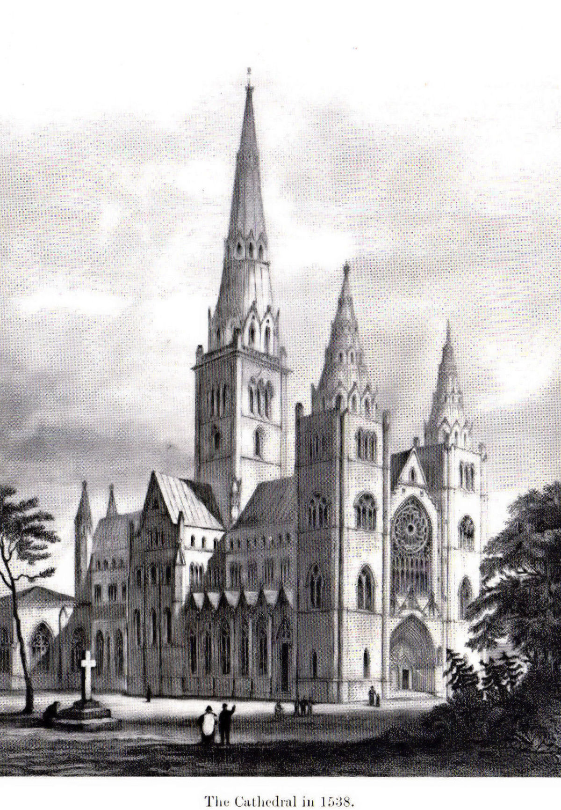

Old Elgin High Street
In the 12th century, Elgin was charted as a Royal Burgh by David I. The exact founding year is not known, but it is known that Elgin atleast existed by 1136.
During the medieval period, Elgin thrived as a hub for trade.
Elgin also experienced many wars and battles, changing it into what it is today.
Elgin Cathredals foundations were ceremoniously laid in 1224, being finished around 1242. However, it was subsequently destroyed in a fire in 1270, where it was then reconstructed. The reasons for this fire are not known.
